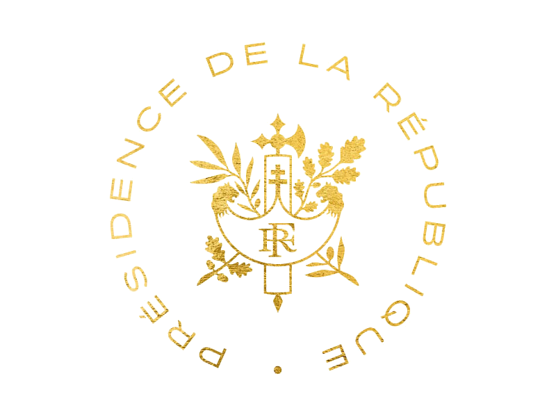

{{ t.eyebrow }}
{{ t.heroPre }}{{ t.heroEm }}{{ t.heroPost }}
{{ t.heroProof }}
{{ t.heroSub }}
{{ t.heroDeep }}
{{ t.findMe }}
{{ s.name }}

{{ t.recordKicker }}
{{ r.n }}
{{ r.label }}
{{ t.instLabel }}

{{ t.recordFootnote }}{{ t.roomsKicker }}
{{ t.roomsTitle }}
{{ t.whyKicker }}
{{ t.whyLead }}
{{ t.whyBody }}
{{ t.whyClosePre }}{{ t.whyCloseBold }}{{ t.whyClosePost }}
{{ t.whySign }}
{{ t.quoteKicker }}
“Good news: AI isn't going to replace you.
Bad news: a person who uses AI will.
One thing is certain — talent will matter even more.”
{{ t.clientsKicker }}
{{ t.clientsTitle }}
{{ t.caseKicker }}
{{ t.caseTitle }}
{{ t.testiKicker }}
“
{{ tm.quote }}
{{ tm.name }}
{{ tm.role }}
{{ t.whoKicker }}
{{ t.whoTitle }}

{{ t.contactLoc }}
{{ t.contactTitle }}
{{ t.contactSub }}
{{ t.contactCta }} →